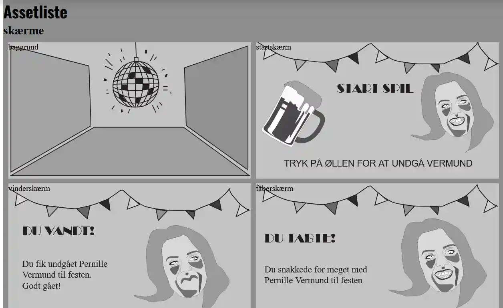

I dette tema blev jeg introduceret for JavaScript, som kan bruges til at
kode dynamiske websites. Det bliver blandt andet også brugt til
burgermenuer. Vi skulle bruge JavaScript i dette tema sammen med CSS
animationer, til at skabe et lille spil.
PROCESSEN
Jeg startede med at lave to styletiles. et med farver og et der var
mere tegneserie-agtigt. Jeg valgte hurtigt, at tage det
tegneserie-agtige, som kan ses ovenover, da det var værdiord, som
sjovt og simpelt og karikeret, jeg havde fra starten af. Derefter
lavede jeg en papir-prototype af spillet. Den var meget simpel, men
gav indtrykket af det endelige spil meget godt. Den kan ses øverst.

ANIMATIONERNE
Animationerne var lavet med css, så når man trykkede på elementerne
ville en class, fx forsvind, opstå og få elementet til at forsvinde.
JavaScripten gjorde at man kunne tilføje en class eller fjerne en
class med addClass eller removeClass. Desuden brugte man
documentQuerySelector til at vælge de forskellige ting man ville have
fat i, og derefter kunne man så få dem til at forsvinde eller falde
osv.